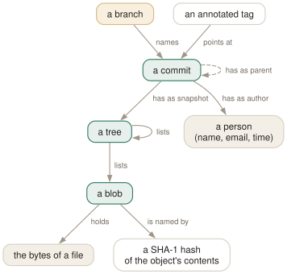

Day 01
Snapshots, not diffs
The object store under every git command: blobs, trees, commits, and names that are hashes.
By the end of today you can
- explain what a commit actually contains, and why git stores snapshots rather than changes
- take a commit apart by hand with
git cat-file -p, down to the bytes of one file - predict when git will store a new object and when it will reuse one it already has
git is a key–value store with a VCS on top
Underneath the two hundred commands, git is a small database. You hand it some bytes, it hashes them, and it files them under the hash. Every commit, every directory listing, every version of every file is an entry in that store. Learn the four kinds of entry today and every later command becomes a question of which entries it creates and which names it moves.
The manual page says it in one paragraph, under DISCUSSION: the object database holds blobs, which hold file data; trees, which point to blobs and other trees to build up directories; and commits, which each reference a single tree and some number of parent commits. A fourth type, the tag, exists so that a point in history can be signed. That is the entire data model.
The word that matters is single tree. A commit does not record what changed. It records what the whole project looked like — a complete snapshot — plus a pointer to the previous snapshot. When git log -p shows you a diff, it is comparing two trees on the spot.

Names are hashes of contents
Every object's name is the SHA-1 of its contents (with a short header: its type and length). Nothing else goes into the name — not the file name, not the time, not the repository. So the same bytes get the same name everywhere:
$ echo hello | git hash-object --stdin
ce013625030ba8dba906f756967f9e9ca394464a
$ printf 'blob 6\0hello\n' | sha1sum
ce013625030ba8dba906f756967f9e9ca394464a -
That second line is the whole trick, reproduced with coreutils: the word blob, the length, a NUL byte, and the content. Run it on your machine and you get the same forty characters, because nothing about your machine went in.
Three consequences follow, and you will lean on all three:
- deduplication
- Two files with identical contents — in the same commit, or ten years apart — are one blob. A commit that changes one file out of ten thousand writes one new blob, a handful of trees, and a commit.
- integrity
- An object that does not hash to its own name is corrupt, and git can tell. Because a commit names its tree and its parents by hash, one commit hash vouches for the entire history behind it.
- immutability
- You cannot edit an object; an edited object is a different object with a different name. Every “rewrite” command you will meet makes new objects and moves a name to point at them.
Taking a commit apart
One plumbing command is worth learning on the first day because it shows you the store directly: git cat-file. -t gives the type of an object, -p prints it. Build a tiny repository and walk down from the commit to the bytes:
$ git init -b main demo && cd demo
$ echo hello > greeting.txt
$ mkdir src && echo 'main = pure ()' > src/Main.hs
$ git add . && git commit -m 'First snapshot'
$ git cat-file -p HEAD
tree 8266f8d901ef8cd6b3e4b968709075333560d729
author Ada Example <ada@example.com> 1790319600 +0200
committer Ada Example <ada@example.com> 1790319600 +0200
First snapshot
$ git cat-file -p 8266f8d
100644 blob ce013625030ba8dba906f756967f9e9ca394464a greeting.txt
040000 tree 01942f8e7f0cb99a802716705f6b828f635567e0 src
$ git cat-file -p ce01362
hello
Read the commit: a tree line, an author and a committer (who wrote the change, and who recorded it — they differ after a rebase or a cherry-pick), a blank line, the message. The first commit has no parent line; every later one has one, and a merge has two. Your tree and commit hashes will differ from these, because your name and clock went into them. The blob hash will not.
Read the tree: one line per entry, with a mode (100644 a file, 100755 an executable, 040000 a directory, 120000 a symlink), a type, a hash and a name. The name lives in the tree, not in the blob — which is why the blob can be shared between two paths.
Watching deduplication happen
Now commit a copy of the file under a new name, and count what got stored:
$ cp greeting.txt copy.txt && git add copy.txt
$ git commit -m 'Copy the greeting'
$ git cat-file -p HEAD^{tree}
100644 blob ce013625030ba8dba906f756967f9e9ca394464a copy.txt
100644 blob ce013625030ba8dba906f756967f9e9ca394464a greeting.txt
040000 tree 01942f8e7f0cb99a802716705f6b828f635567e0 src
$ git count-objects -v | head -1
count: 7
Seven, not eight. Two blobs (the greeting and Main.hs), three trees (the first root, src, the second root), two commits. The copy is the same blob, listed twice. The src tree is the same tree in both commits, because nothing inside it changed — the second snapshot reuses the whole subdirectory by hash.
Where the store lives
All of this is in .git/objects/, one file per object at first (.git/objects/ce/013625…, zlib-compressed), later bundled into packfiles — Day 20 opens them up. Next to it are the names: .git/refs/heads/main is a file containing one commit hash, and .git/HEAD is a file saying which branch you are on:
$ cat .git/HEAD
ref: refs/heads/main
$ cat .git/refs/heads/main
b06f7f715b11ad4c834172526a44f2132f9760a4
That split — an append-only store of immutable objects, and a handful of small mutable files that point into it — is the design. Committing adds objects and moves main. Resetting moves main. Fetching adds objects and moves origin/main. Almost nothing git does ever deletes an object; tomorrow's lesson adds the one piece still missing, the index, which is where the next commit is assembled.
Today's habit
The next time a git command surprises you, run git cat-file -p HEAD before and after it. Ask which objects appeared and which names moved. It is a slower question than “what happened to my files”, and it is the one that always has an answer.
Tomorrow: the working tree, the index, and HEAD — the three places a file can be, and the commands that move it between them.
New vocabulary
Commands
| Command | Does |
|---|---|
git init -b main | Create an empty repository whose first branch is main. |
git hash-object <file> | Print the object name the file's contents would get. Writes nothing without -w. |
git cat-file -t <object> | Print an object's type: blob, tree, commit or tag. |
git cat-file -p <object> | Pretty-print an object's contents. The one command that shows what git really stores. |
git cat-file -s <object> | Print an object's size in bytes. |
git ls-tree -r <tree-ish> | List every blob in a tree, recursively, with mode and hash. |
git rev-parse HEAD | Turn a name into the full hash it currently means. |
git count-objects -v | Count loose and packed objects and the disk they use. |
Drillsdo these in a real terminal, today
Self-check
Answer out loud first, then unfold.
You rename a 200 MB video in your repository and commit. How much does the repository grow, and why?
By a few hundred bytes. The blob is named by its contents, and the contents did not change, so git already has that object. The commit writes a new tree (the directory listing now has a different name in it), new trees for any parent directories, and a new commit. None of those contains the video.
This is also why git has no rename operation in its data model. git mv is a convenience; renames are inferred afterwards by comparing trees, which is why Day 6 needs --follow.
A colleague says “git stores diffs, so checking out a commit from three years ago must replay three years of changes”. What is wrong with the argument?
The premise. Every commit points at a complete tree, so checking out an old commit means reading one tree and the blobs it names — the same work as checking out HEAD. The diffs you see in git log -p are computed on the fly by comparing two trees.
Packfiles (Day 20) do store objects as deltas against each other, to save disk. That is a compression layer underneath the model, not the model itself, and the deltas are chosen for size, not along history.
You change one character in the commit message of an old commit. Why does every commit after it get a new hash too?
Because a commit's hash covers its whole text, and that text includes the parent line — the hash of the commit before it. Change one commit and its hash changes; its child now names a different parent, so its text and hash change; and so on to the tip. This is what “rewriting history” means mechanically, and it is why Day 9 has to talk about force-pushing.
In a brand-new repository, git log says your branch “does not have any commits yet”, and .git/refs/heads/ is empty. Where is the branch?
Nowhere yet. .git/HEAD already says ref: refs/heads/main, but a branch is a file holding a commit hash, and there is no commit to hold. The first git commit creates the commit and the branch file in one step. The glossary calls this state an “unborn” branch, and it is why some commands behave oddly before the first commit.
Cheat sheet
The whole data model in nine lines. Every later day is operations on this.
# blob the bytes of one file; no name, no mode
# tree a directory listing: mode, type, hash, name
# commit one tree + parents + author/committer + message
# tag an annotated, signable pointer to an object
git hash-object FILE # the name those bytes would get
git cat-file -t OBJ # its type
git cat-file -p OBJ # its contents
git ls-tree -r HEAD # every blob in the current snapshot
cat .git/HEAD # which branch you are on (read-only habit)
Everything through Day 01
Commands
| Command | Does |
|---|---|
git init -b main | Create an empty repository whose first branch is main. |
git hash-object <file> | Print the object name the file's contents would get. Writes nothing without -w. |
git cat-file -t <object> | Print an object's type: blob, tree, commit or tag. |
git cat-file -p <object> | Pretty-print an object's contents. The one command that shows what git really stores. |
git cat-file -s <object> | Print an object's size in bytes. |
git ls-tree -r <tree-ish> | List every blob in a tree, recursively, with mode and hash. |
git rev-parse HEAD | Turn a name into the full hash it currently means. |
git count-objects -v | Count loose and packed objects and the disk they use. |